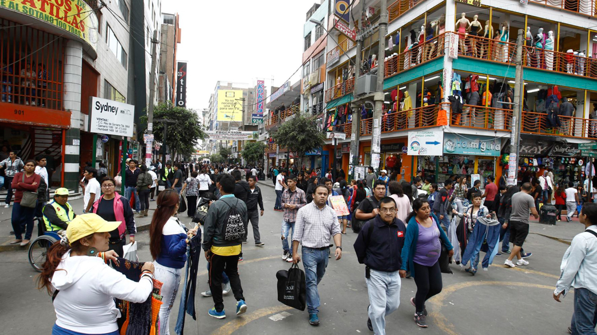
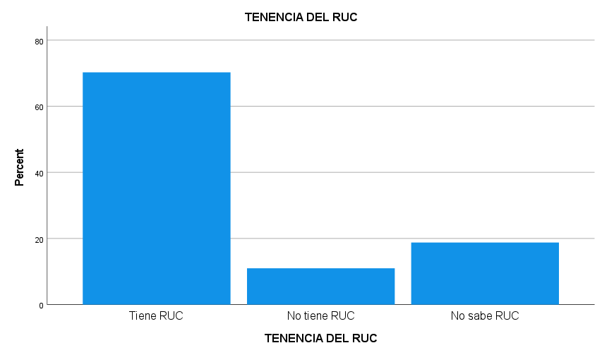
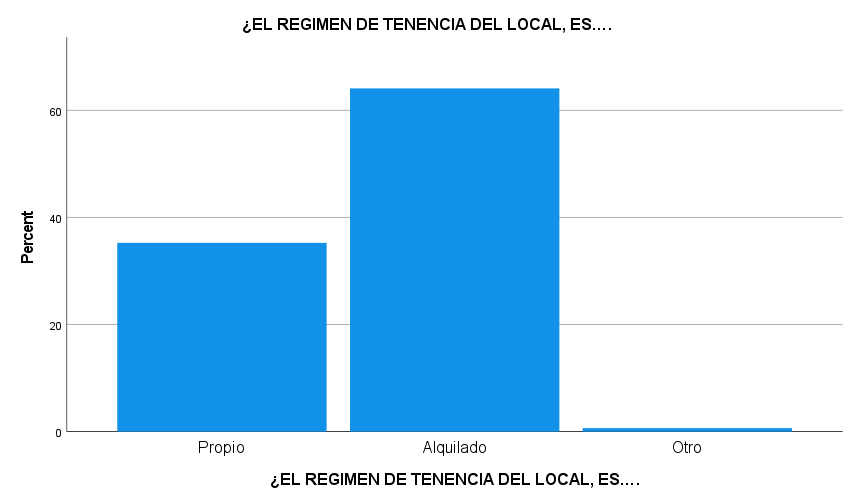
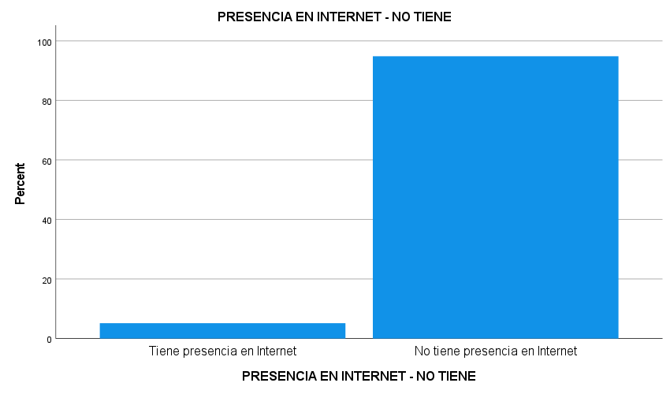
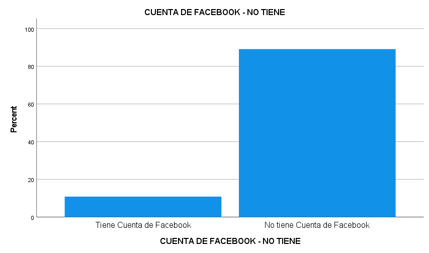
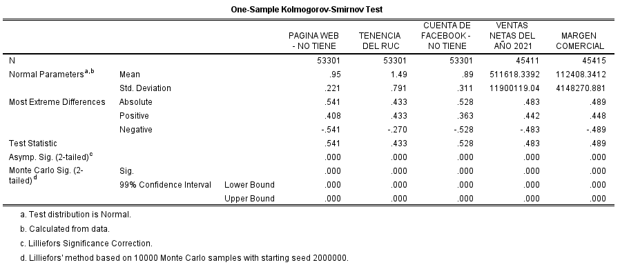
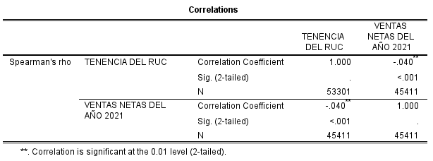
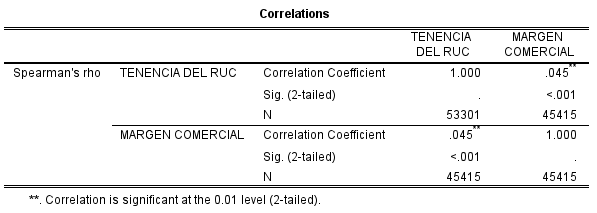
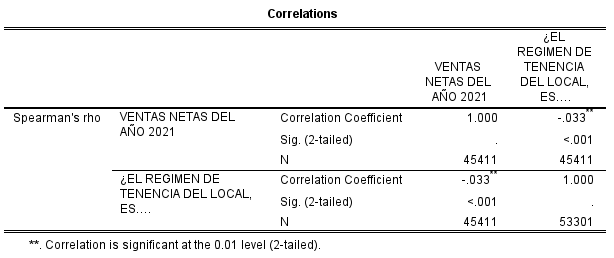

Autores
Asesor
Ing. Mg. Cardenas Palacios, Carlos Armando
Línea de Investigación
Sistemas de Información y Gestión de la Tecnología
Las MYPES constituyen el motor de la economía mundial, pero priorizan la rentabilidad inmediata sobre la seguridad (ISO 31000). A nivel de Latinoamérica, el 70% fracasa en los primeros 5 años debido a una administración empírica y reactiva ante crisis externas.
Distrito que funciona como un emporio comercial de alto flujo económico, pero que alberga una preocupante "bomba de tiempo operativa":

Dinámica comercial en el distrito de La Victoria.
Definido por la Norma ISO 31000: Proceso sistemático de identificación, análisis y tratamiento de la incertidumbre para proteger el valor del negocio.
Según el Marco de Gestión del BID: Es la incapacidad de la estructura económica para absorber choques negativos sin entrar en insolvencia, evidenciado en la alta dependencia del flujo de caja diario.
Cardona y Castro (2025)
Las PYMES operan de forma empírica y reactiva, careciendo de control, lo que precipita su fracaso financiero.
Usulle (2022)
Demostró correlacionalmente que un incremento en las fallas operativas reduce significativamente la rentabilidad neta.
Hidalgo y Xiao (2022)
La falta de adaptación tecnológica y la informalidad legal (falta de RUC) son los principales predictores de mortalidad empresarial.
Determinar la relación entre la gestión del riesgo operativo y la vulnerabilidad financiera en las microempresas comerciales del distrito de La Victoria, 2022.
Determinar la relación entre el riesgo normativo y la vulnerabilidad financiera.
Analizar la relación entre el riesgo tecnológico y la vulnerabilidad financiera.
Evaluar la relación entre el riesgo de infraestructura y la vulnerabilidad financiera.
Población y Muestra Censal
Microempresas comerciales empadronadas
Enfoque
Cuantitativo
Tipo
Aplicada
Diseño
No experimental, Transversal, Correlacional
Técnica e Instrumento (Fuente Oficial)
Análisis de datos secundarios - V Censo Nacional Económico (INEI, 2022). Formulario CENEC.01.04.
El 29.7% de establecimientos opera en la informalidad o desconoce su situación tributaria, evidenciando un alto riesgo regulatorio.

El 63.7% desarrolla sus actividades en locales alquilados, generando alta dependencia y volatilidad en los costos fijos comerciales.

Se evidencia un aislamiento digital casi absoluto en las unidades económicas analizadas, mermando su competitividad.

94.3% NO cuenta con Página Web propia.

88.6% NO utiliza Facebook comercialmente.
Ventas Netas Anuales
Margen Comercial (Alerta)
Para determinar la prueba estadística pertinente, se aplicó la prueba de Kolmogorov-Smirnov dado que el tamaño poblacional evaluado supera ampliamente los 50 casos (N = 53,624).
Significancia Asintótica (p-valor) = 0.000
Como p < 0.05 en todas las variables, se rechaza la normalidad de los datos. Se justifica estadísticamente el uso de pruebas no paramétricas (Rho de Spearman).

"Existe relación significativa entre la gestión del riesgo operativo y la vulnerabilidad financiera en las microempresas comerciales del distrito de La Victoria, 2022."



Se validaron correlaciones estadísticamente significativas (p < 0.001) entre el descontrol operativo y la fragilidad financiera en una muestra masiva de 53,624 unidades comerciales. La magnitud de la correlación es baja debido a la altísima rotación comercial de Gamarra, que inyecta liquidez diaria pero no asegura la estabilidad.
Los datos son consistentes con la literatura académica contemporánea:
La informalidad y nula digitalización generan un espejismo económico. Las MYPES facturan por el intenso tráfico peatonal, no por su eficiencia gestora.
La gestión deficiente del riesgo operativo es un detonante estadísticamente probado de la vulnerabilidad financiera (p < 0.001). La seguridad operativa no es un gasto administrativo, es el escudo de resiliencia del negocio.
La informalidad legal (carecer de RUC) actúa como una barrera rígida que bloquea el crédito formal y expone los márgenes comerciales a la destrucción de valor ante posibles cierres o multas.
El aislamiento digital extremo (94.3% sin web) merma los volúmenes de ventas netas, desarmando a las Mypes ante la competencia y las dinámicas del comercio electrónico moderno.
La excesiva dependencia del arrendamiento logístico asfixia los costos fijos, reduciendo severamente la predictibilidad de los ingresos a largo plazo por la inestabilidad de contratos.
Implementar manuales de control interno según la norma ISO 31000. Formalizar inmediatamente su RUC para acceder a financiamiento y transitar hacia canales de venta digitales. Establecer fondos líquidos de contingencia para la gestión de alquileres.
Ampliar la muestra hacia estudios de diseño longitudinal para medir la evolución temporal de la mortalidad empresarial, e integrar variables de georreferenciación urbana para medir el hacinamiento físico comercial.
Sustituir las políticas puramente punitivas por estrategias de formalización asistida. Forjar alianzas entre municipalidades y la Universidad César Vallejo para brindar educación tecnológica y financiera a los comerciantes de La Victoria.
Quedamos a entera disposición para las observaciones del jurado calificador.